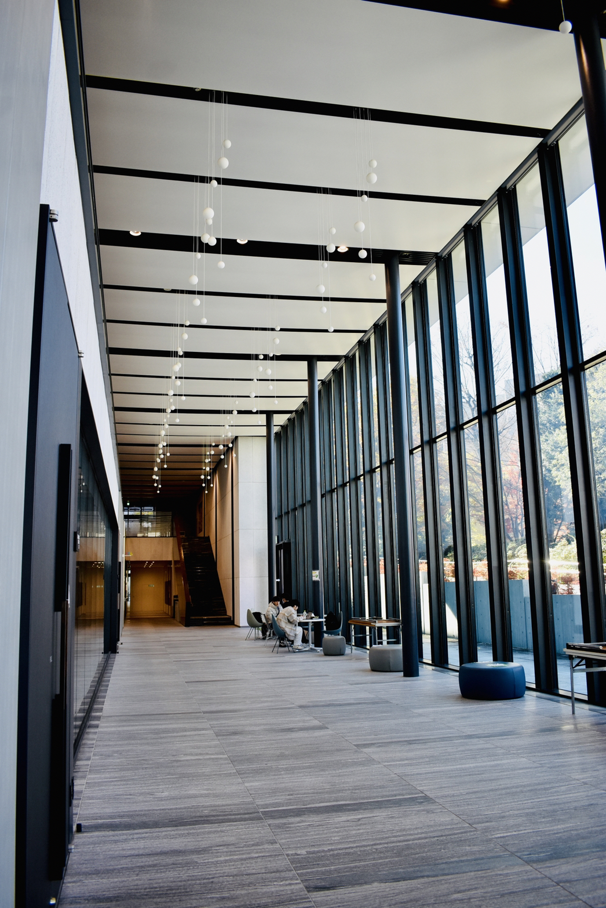

▲学び場、専修大学。（一眼で撮影）
石川怜奈のポートフォリオに訪れていただき、誠にありがとうございます。
デザインの面白さに魅了され、拙くも勉強してきました。
その成果の一部を備忘録としてここに納めておきます。
石川怜奈のポートフォリオに訪れていただき、誠にありがとうございます。
デザインの面白さに魅了され、拙くも勉強してきました。
その成果の一部を備忘録としてここに納めておきます。
初めて三か月で作成したものです。大学での学び以外に勉強していなかったため、スマホ対応もできずJSは見よう見まねでしたが、面白いものを作れました。三原色ってシステム上の作品であって、自分好みに創ってもいいと思うのです。
使用ツール：Atom
春期課題として地元の人々に取材し、地元紹介webサイトを作成しました。雑誌記事の様なレイアウトに拘っています。（※個人情報保護のため、一部閲覧できない部分がございます。）
使用ツール：Atom / VScode
自分の所属するサークルのホームページを学部仲間と共同制作しました。広報の一つとして現在も活躍しています。
使用ツール：WordPress
身内の新事業サポートとして、ホームページを作成しました。お問い合わせ機能の実装やSEO対策を無料の範囲ですが行っております。（※ロゴデザインは担当しておりません。）
使用ツール：Wix

和風かるぼなぁらを手打ち麺から作成、それをレシピ化。和風感のある色や新聞風レイアウトに拘りました。
使用ツール：Illustlator / Photoshop
自分の所属する学部をインフォグラフィックで紹介。プラモデルのような見た目と自由さを表現しました。
使用ツール：Illustlator
ゴミ分別でよくあるピクトグラムを作成しました。色合いや形状で色盲の方でも判断しやすく工夫してみました。
使用ツール：Illustlator
ゴミ分別のピクトグラムを使って、架空の街のゴミ分別表を作成しました。
使用ツール：Illustlator
用意されたシルエットを文章に合わせて並べ、相関図を作成しました。線の重なりの無い、図での要約を目指しました。
使用ツール：Illustlator
神社の手続きを外国人向けにまとめました。重要な動きがピクトグラムだけでも理解できるよう動作に注意しました。
使用ツール：Illustlator
上に乗っているプリンが高級に見えるお皿を作成しました。リアルさを求めています。
使用ツール：Blender / CLIP STUDIO

高級皿のえのきバージョンです。高級フレンチって正直こんな感じだと思っています。
使用ツール：Blender / CLIP STUDIO
オリジナルキャラクターの立ち絵を書いてみました。打つ映しい表情づくりと体型に拘っています。
使用ツール：CLIP STUDIO
夏の記念に描いたイラスト。残暑と少し名残惜しい表情が垣間見える雰囲気を意識しています。
使用ツール：CLIP STUDIO
身内のピアノ発表会で使用するパンフレットを作成しました。こちらは表紙絵です。
使用ツール：CLIP STUDIO
パンフレットの別デザイン依頼バージョンです。
使用ツール：CLIP STUDIO
完全な個人の好みで作成したイラストです。和風な雰囲気がとても気に入っています。
使用ツール：CLIP STUDIO
友人の誕生日に駄菓子箱のラベルを作成。紙のかすれ感をやすりで出してみました。
使用ツール：CLIP STUDIO
バウンドする壁を利用しながら10秒以内に金魚鉢に戻してあげないと干からびるゲームです。（※非公開）
使用ツール：Unity / CLIP STUDIO
ドット絵のイライラ棒ゲームを作りました。音楽も自作、懐かしさのあるゲームに仕上げてみました。
使用ツール：Scratch / CLIP STUDIO
脱出ゲームを作ってみました。謎は勿論、3Dを2Dで作成するために写真を100枚以上準備しています。（※非公開）
使用ツール：MagicaBoxel / processing
ゲームプレイ中の写真です。
Rena Ishikawa
専修大学ネットワーク情報学部 ネットワーク情報学科 2年
Dコース / PCプログラム
趣味：ピアノ即興、イラスト等 創作活動全般
使用ツール（年数順）：Microsoft Office / CLIP STUDIO PAINT PRO / MagicaBoxel / Google Site / Blender / Unity /
WordPress / Illustlator / Photoshop / Wix / Cubase
講義の一つとしてデザインやwebの基礎を学び、その面白さに感動。
趣味の創作活動や大学での演習に取り組み、”もっとすごいもの”を作れるように奮闘中です。